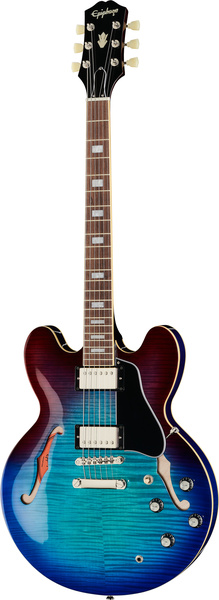

Kitarakeskus
Löydä oma sointisi
Kitarakeskus on kitaroihin erikoistunut verkkokauppa, josta löydät laadukkaat sähkö- ja akustiset kitarat sekä tarvikkeet niin aloittelijoille kuin kokeneille soittajille. Meidän kanssamme pääset nopeasti ja helposti soittamaan.
Katso valikoimaMiksi Kitarakeskus?
Tavoitteenamme on auttaa sinua pääsemään nopeasti soittamaan. Olitpa aloittelija tai kokenut kitaristi, Kitarakeskus tarjoaa luotettavat soittimet ja tarvikkeet jokaiseen tarpeeseen. Meille tärkeintä on hyvä sointi ja helppo alku.
- Helppo ja selkeä verkkokauppa
- Kitaristeille suunniteltu valikoima
- Nopea toimitus
- Asiantunteva palvelu
Kitarakeskus syntyi rakkaudesta musiikkiin
Tavoitteenamme on tarjota kitaristeille laadukkaita soittimia ja tarvikkeita helposti ja luotettavasti. Olitpa vasta-alkaja tai kokenut soittaja, meiltä löydät sopivan kitaran.
Lue lisää
Oikean kitaran valinta lähtee omasta tyylistä
Aloittelijalle tärkeintä on helppo soitettavuus, kun taas kokeneempi kitaristi kiinnittää huomiota sointiin ja tuntumaan. Sähkökitara sopii monipuoliseen musiikkiin, kun taas akustinen kitara on hyvä valinta säestykseen ja kotisoittoon.
Ota yhteyttä